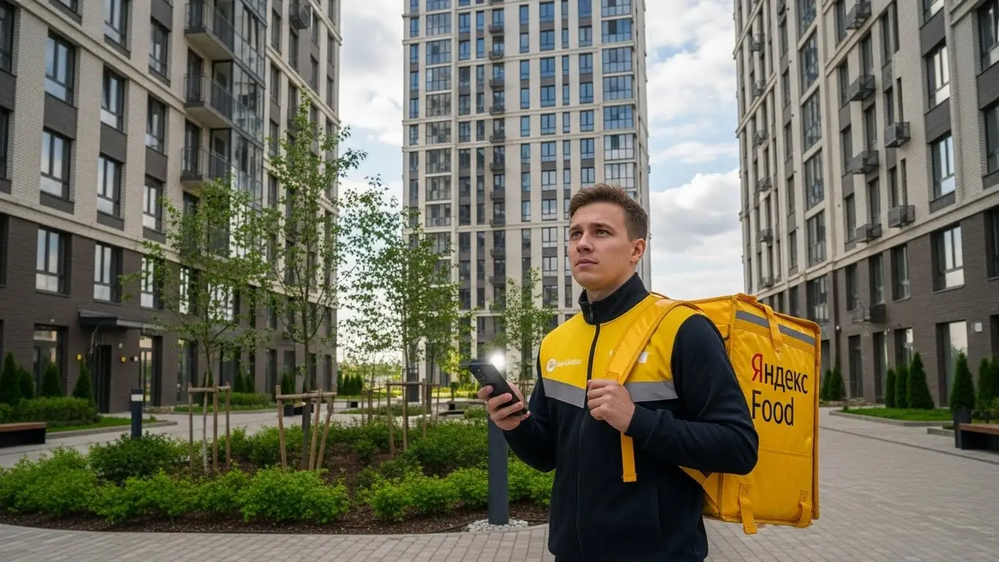
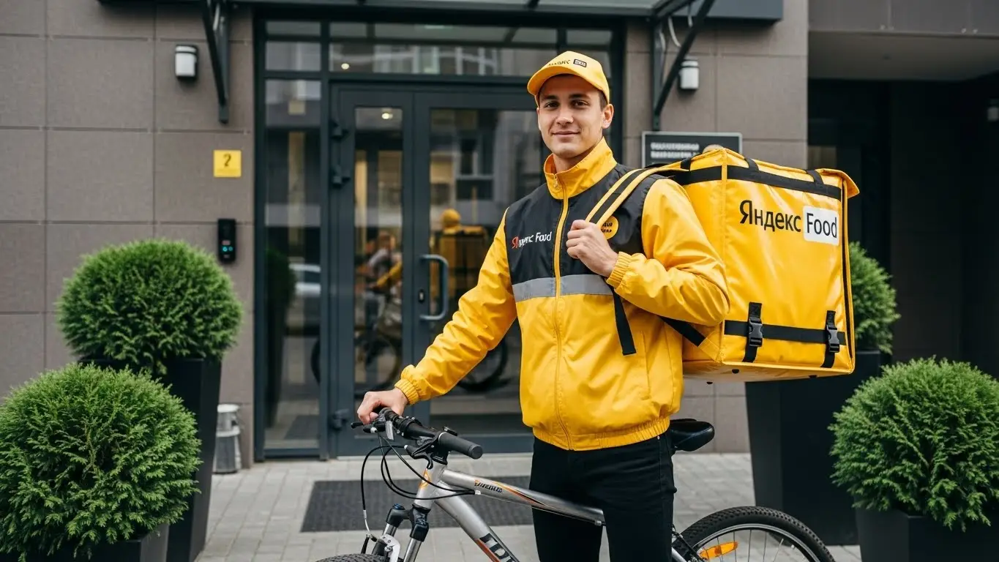

Работа курьером Яндекс Еда в Череповце в 2025-2026: доход и условия
- Работа курьером Яндекс Еды в Череповце: для кого эта вакансия и что вы получите
- Сколько вы будете зарабатывать курьером в Череповце: калькулятор дохода и разбор выплат
- Реальный заработок курьера в Череповце: смены и месячный доход
- График работы и форматы занятости
- Требования к кандидату и документы
- Самозанятость, налоги и юридическая чистота
- Пошаговое оформление и первый выход на линию в Череповце
- Пешком, на вело или на авто: что выгоднее в Череповце
- Районы, маршруты и «топовые» зоны заказов в Череповце
- Безопасность, страховка, штрафы и оплата простоя
- Плюсы и возможные минусы работы курьером в Череповце
- Реальные истории и отзывы курьеров из Череповца
- Ответы на главные вопросы о работе курьером Яндекс Еды в Череповце
- Короткие ответы на главные вопросы
- Итоги и ваш следующий шаг
Все города
Здорово, будущий коллега! Думаешь, как бы поднять денег на доставке и присматриваешься к жёлтой сумке? И сразу в голове рой вопросов: а стоит ли оно того? Сколько реально останется в кармане после бензина, налогов и возможных штрафов? Не «убьёшь» ли ты свой велик или подвеску авто на наших дорогах, особенно после зимы? И не будешь ли часами стоять в пробках на Октябрьском мосту за копейки? Забудь про рекламные обещания. Это честный разговор о том, что такое работа курьером Яндекс Еда в Череповце на самом деле, от человека, который знает эту систему изнутри.
Понять «внутрянку» именно нашего города — это главное, чтобы не разочароваться в первый же месяц. Потому что Череповец — город со своей спецификой. Одно дело — крутить педали по новому и просторному Зашекснинскому, и совсем другое — лавировать по тесным дворам Заречья или Индустриального района. Доход здесь — это не просто «цена за заказ». Это твоё умение обходить пробки, знание коротких путей, понимание, когда и где самый высокий спрос, и как не попасть под штрафы. Большинство новичков в Череповце совершают одни и те же ошибки и теряют деньги, просто потому что не знают этих нюансов. Если вы хотите сразу увидеть краткую сводку условий, воспользоваться калькулятором дохода и подать заявку, то вся актуальная информация про работу курьером Яндекс Еда в Череповце собрана на официальной странице.
В этом гиде мы по-честному разберём всё до мелочей. Посчитаем, сколько чистыми выходит в карман за смену на своих двоих, на велосипеде и на машине. Выясним, какие районы в Череповце самые «рыбные», а куда лучше не соваться в час пик. Я покажу на примерах, как череповецкая погода — от зимней «каши» на дорогах до летних ливней — влияет на заработок и сложность работы. И, конечно, расскажу, за что реально штрафуют и как этого избежать, чтобы твой рейтинг и доход только росли.
Меня зовут Алексей. Я сам откатал не одну тысячу километров с жёлтой сумкой по Череповцу, а сейчас у меня свой небольшой таксопарк-партнёр. Так что я знаю эту кухню с обеих сторон — и как курьер, и как тот, кто помогает ребятам выходить на линию. Никакой воды и рекламной шелухи, только мясо, цифры и советы, которые сэкономят тебе кучу нервов и денег. В общем, пристегивайся (или проверяй давление в шинах), сейчас всё разложу по полочкам.
Чтобы ты не запутался во всех деталях, я разбил статью на понятные блоки. Вот что мы разберём дальше.
Что ты точно узнаешь из этого разбора
В этой статье ты ТОЧНО узнаешь:
- Сколько реально можно заработать в Череповце за смену и за месяц, если работать пешком, на вело или на авто?
- Какие районы и ТРЦ в Череповце самые «рыбные» и в какое время суток лучше выходить на линию, чтобы не сидеть без заказов?
- За что на самом деле могут снизить рейтинг или применить штраф, и как этого избежать новичку?
- Почему нужно быть самозанятым, как это оформить за 10 минут и сколько налогов придётся платить?
- Как работает оплата простоя, если ресторан задерживает заказ, и почему это защищает твой доход?
- Что выгоднее в Череповце — работать пешком в центре, на велосипеде в спальниках или на авто по всему городу?
А если тебе некогда читать всю статью — переходи сразу к заключению, где ты найдёшь короткие ответы на все эти вопросы и указания, в каких разделах искать подробности.
А вот наглядная инфографика с основными цифрами по работе в Череповце.
Работа в Яндекс Еде (Череповец): ключевые цифры

Работа курьером Яндекс Еды в Череповце: для кого эта вакансия и что вы получите
Кому подойдёт эта работа в Череповце
Давай начистоту: эта работа не для всех, но для многих она — настоящая находка. В первую очередь, это отличный вариант для студентов, особенно из ЧГУ или металлургического колледжа. Можно спокойно отсидеть пары, а вечером выйти на пару-тройку часов и заработать на личные расходы, не прося у родителей. График ты строишь сам, так что совмещать с учёбой — милое дело.
Такая подработка идеальна и для тех, у кого есть основная работа, например, по сменному графику на «Северстали». Остаются свободные дни или вечера — сел на машину или велосипед и поехал зарабатывать. Чтобы стать курьером, не требуется никакого опыта, всему научат за полчаса онлайн. Главное — желание двигаться и наличие смартфона. И конечно, это работа для тех, кому деньги нужны здесь и сейчас: ежедневные выплаты решают эту проблему.
Главные преимущества для жителей районов Зашекснинский, Индустриальный, Зареченский
Самый большой плюс, который многие недооценивают, — возможность работать буквально у себя под окнами. Тебе не нужно ехать через весь город и стоять в пробках на Октябрьском мосту, чтобы начать смену. Живёшь в Зашекснинском районе (в народе — ЗШК)? Отлично, выбираешь в приложении эту зону и доставляешь заказы по новым кварталам, где всегда много клиентов.
То же самое касается и старых районов. Если ты из Индустриального или Зареченского, можешь работать там. Ты знаешь каждый двор и каждую тропинку, где срезать путь, — это твоё прямое преимущество. Приложение «Яндекс Про» позволяет выбирать конкретные зоны для работы, так что ты не тратишь время и деньги на дорогу до «точки старта». Включил приложение, взял первый заказ рядом с домом и поехал.
Краткое обещание по доходу и условиям
Теперь о главном — о деньгах. В Череповце активный курьер на подработке (3–4 часа в день) может спокойно делать 1500–2500 рублей за смену. Если же рассматривать это как полную занятость и работать по 8–10 часов, то доход выходит в районе 60 000 – 85 000 рублей в месяц. Курьеры на своем авто, готовые брать дальние заказы, зарабатывают ещё больше. Цифры реальные, без фантазий.
Ключевые условия работы просты: свободный график, который ты сам себе составляешь в приложении, и ежедневные выплаты на карту. Никаких начальников над душой, никакого ожидания зарплаты по две недели. Опыт не нужен, всему необходимому научат на коротком онлайн-инструктаже. Начать можно буквально на следующий день после заполнения анкеты.
Расскажу про парня-студента, который у меня в парке числится. Живёт в Заречье, учится в ЧГУ. После пар стабильно выходит на 3-4 часа на велосипеде. Катается по своему району, знает все кафешки. За вечер спокойно привозит 1800-2000 рублей. Говорит, на жизнь и развлечения хватает с головой, ещё и откладывать умудряется. Главное, по его словам, не лениться и выходить в пиковые часы — с 18:00 до 21:00.
В общем, эта работа подходит тем, кто ценит свободу и быстрые деньги. Главное преимущество в Череповце — возможность работать в своём районе, не тратя время на дорогу. Мой совет: начни с той части города, которую знаешь как свои пять пальцев. Так ты быстрее войдёшь в ритм и начнёшь хорошо зарабатывать.
Сколько вы будете зарабатывать курьером в Череповце: калькулятор дохода и разбор выплат
Из чего складывается доход курьера
Твой заработок в Яндекс Еде — это не просто фиксированная ставка, он складывается из нескольких частей. Во-первых, это базовая оплата за каждый выполненный заказ. Во-вторых, доплата за расстояние — чем дальше везти, тем больше денег ты получишь. Система всё считает автоматически, обмануть её не получится.
Кроме того, есть повышающие коэффициенты. В часы пик (обед, ужин), в плохую погоду (дождь, снегопад) или в зонах с высоким спросом стоимость заказов умножается на определённый коэффициент. Это самые выгодные часы для работы. Также сервис начисляет бонусы за выполнение персональных целей, например, за определённое количество заказов в неделю. Не забывай про чаевые от клиентов — они полностью твои. Сервис также платит за простой, если ты приехал в ресторан, а заказ ещё не готов, и может компенсировать проезд на общественном транспорте при дальних пеших доставках.
Как пользоваться калькулятором дохода
Чтобы прикинуть свой возможный заработок, не нужно гадать на кофейной гуще. На сайте есть специальный калькулятор. Пользоваться им проще простого. Сначала выбираешь свой город — Череповец. Затем указываешь, как планируешь доставлять: пешком, на велосипеде или на своём автомобиле. Дальше двигаешь ползунки: сколько часов в день и сколько дней в неделю ты готов работать. Например, 4 часа 5 дней в неделю. Калькулятор тут же покажет тебе примерный диапазон твоего дохода за день и за месяц. Это, конечно, не стопроцентная гарантия, а прогноз, но он основан на реальной статистике по городу и помогает сориентироваться, на что можно рассчитывать.
Калькулятор дохода курьера в Череповце
Это примерный расчёт на основе средней ставки в 400 ₽/час. Реальный доход зависит от спроса, бонусов и твоего графика.
Точные цифры и актуальные условия для нашего города всегда можно проверить на официальной странице. Там же есть подробный FAQ и анкета для быстрой заявки: работа курьером Яндекс Еда в твоём городе.
Примеры расчёта для пешего, вело- и авто‑курьера в Череповце
Давай на конкретных примерах.
- Пеший курьер. Студент, работает после учёбы по 4 часа вечером в центре, в районе Советского проспекта. Заказы там короткие, но их много. За вечер он выполняет 8–10 доставок. Его средний заработок за смену составит около 1600–2000 рублей.
- Велокурьер. Парень работает по выходным, по 6–7 часов. Он выбирает для работы Зашекснинский район, где много новостроек и можно быстро передвигаться. За счёт скорости он успевает сделать 15–18 заказов. Его дневной доход может достигать 3000–3500 рублей.
- Курьер на автомобиле. Мужчина, для которого это основная работа. Он на линии по 8–9 часов, берёт заказы по всему городу, включая дальние доставки в промзону или на окраины. В плохую погоду его доход резко возрастает за счёт коэффициентов. В среднем за полный рабочий день он зарабатывает 4000–5500 рублей, но из этой суммы нужно вычесть расходы на бензин.
У меня есть водитель, назовём его Сергей. Работает на своей «Гранте». В прошлую пятницу был сильный ливень, и он специально вышел на линию в 17:00. Включились максимальные коэффициенты, заказы из ТРЦ «Июнь» и «Макси» сыпались без остановки. За 5 часов работы он сделал почти 4000 рублей «грязными». Говорит, в обычный день на это ушло бы 8-9 часов.
Итог простой: твой доход напрямую зависит от тебя. Чтобы зарабатывать больше, нужно понимать, из чего он состоит. Следи за картой спроса в приложении «Яндекс Про», не бойся плохой погоды и выходи на линию в вечерние часы и выходные. Именно тогда в Череповце можно сорвать самый большой куш.
Реальный заработок курьера в Череповце: смены и месячный доход
Давай к главному — к деньгам. Рекламные цифры — это одно, а реальный заработок курьера в Череповце — совсем другое. Я не буду обещать золотые горы, а расскажу, сколько на самом деле можно положить в карман, если подходить к делу с умом. Твой доход в сервисах Яндекс Еда и Доставка напрямую зависит от формата занятости: это может быть подработка на пару часов или полноценная работа.
Диапазон дохода для подработки и полной занятости
Если ты ищешь подработку на 2–4 часа в день, например, после основной работы или учёбы, то цифры в Череповце будут примерно такие. Пеший курьер или велокурьер за короткую смену в удачное время может заработать 800–1500 рублей. В месяц это выливается в 15 000 – 25 000 рублей — неплохая прибавка к стипендии или основной зарплате. Курьер на своем авто за те же 3–4 часа может получить 1500–2500 рублей до вычета расходов на бензин. В месяц чистый доход может составить 30 000 – 45 000 рублей.
При полной занятости, когда ты на линии по 8–10 часов, доход совсем другой. Пеший или велокурьер, который активно работает полный день, может рассчитывать на 2000–3500 рублей за смену. В месяц это уже серьёзные 45 000 – 70 000 рублей. Водитель-курьер на своём авто при полной загрузке делает 3500–5500 рублей в день. За месяц такая работа может принести и 70 000, и даже 100 000 рублей до вычета расходов на топливо и обслуживание машины. Важно понимать, что это не фиксированная зарплата, а результат твоей активности и умения ловить момент.
Как район, время суток и погода влияют на доход
Запомни три фактора, от которых зависит твой заработок: место, время и погода. В Череповце есть «рыбные» места — это центр города в районе Советского проспекта и улицы Ленина, а также зоны вокруг крупных ТРЦ, таких как «Июнь» или «Мармелад». Там всегда много заказов из ресторанов и магазинов, особенно в обеденное время (с 12:00 до 14:00) и вечером (с 18:00 до 21:00). В это время в приложении «Яндекс Про» карта горит фиолетовым — это значит, действуют повышающие коэффициенты, и за каждый заказ ты получаешь больше.
Погода — твой лучший друг. Как только в Череповце начинается дождь, снегопад или сильный мороз, люди предпочитают сидеть дома и активно заказывать еду. Спрос взлетает, коэффициенты растут, а вместе с ними и чаевые — клиенты ценят, что ты доставил им горячий ужин в непогоду. Выходные, особенно вечера пятницы и субботы, — это стабильный пик заказов. Если хочешь заработать максимум, выходи на линию именно в это время, а не в тихий полдень понедельника.
Советы по увеличению заработка от опытных курьеров
Чтобы не просто работать, а именно зарабатывать, нужно подходить к делу стратегически. Во-первых, всегда смотри на карту спроса в приложении Яндекс Про. Не сиди на месте в «белой» зоне, если видишь, что в соседнем районе всё «горит». Иногда лучше потратить 15 минут на дорогу, чтобы потом два часа работать с высоким коэффициентом. Во-вторых, бери плановые слоты в пиковые часы — так у тебя будет приоритет в заказах и часто гарантированный минимальный доход.
Комбинируй форматы. Если у тебя есть и велосипед, и машина, используй их по ситуации. Днём в центре Череповца, где пробки, выгоднее крутить педали. А вечером или в плохую погоду садись за руль — сможешь брать дальние заказы, например, из Индустриального района в Зашекснинский, которые хорошо оплачиваются. Не бойся экспериментировать с районами: поработай неделю в Заречье, неделю в ЗШК, сравни доход и пойми, где тебе выгоднее и удобнее.
Вот недавний пример из практики. Парень-студент на велосипеде обычно катался по своему Зареченскому району, зарабатывал в среднем 300-400 рублей в час. В один дождливый вечер пятницы он увидел в приложении, что в центре, у ТРЦ «Июнь», коэффициент х2.5. Он потратил 20 минут, доехал туда и за следующие два часа сделал почти 2000 рублей, потому что заказы сыпались один за другим.
В общем, твой реальный заработок — это не случайность, а результат планирования и быстрой реакции. Не ленись следить за картой, лови пиковые часы и плохую погоду. Новичкам, которые хотят стать курьером, советую начинать с коротких смен по 3-4 часа в вечернее время или в выходные — так ты поймёшь систему и не перегоришь в первый же день.
График работы и форматы занятости
Главный плюс этой работы — свободный график. Ты сам себе начальник и решаешь, когда и сколько работать. Это идеальный вариант для тех, кто не хочет сидеть в офисе с 9 до 6. Можно выходить на пару часов в день, а можно работать полную неделю — сервис даёт возможность подстроить график под твою жизнь, а не наоборот.
Подработка после учёбы или основной работы
Совмещать доставку с другими делами проще простого. Вот пара реальных примеров из Череповца. Знакомый студент ЧГУ из Индустриального района выходит на смены на велосипеде после пар, обычно с 18:00 до 22:00, плюс берёт длинную смену в субботу. В итоге он спокойно зарабатывает 20-25 тысяч в месяц, которых хватает на личные расходы и развлечения, не прося денег у родителей.
Другой пример — мужчина, который работает на «Северстали» по графику 5/2. У него своя машина, и в пятницу вечером и на выходных он выходит на линию как водитель-курьер. По его словам, за эти 2-3 смены в неделю он спокойно покрывает расходы на бензин, обслуживание авто и ещё откладывает на отпуск. Для него это не основной доход, а способ превратить машину из пассива в актив и заработать дополнительные 30-40 тысяч в месяц.
Полная занятость: как выглядит типичный день курьера
Если ты рассматриваешь доставку как основную работу, твой день будет строиться вокруг пиков спроса. Типичный день опытного водителя-курьера в Череповце выглядит так: он выходит на линию около 10 утра и начинает с Зашекснинского района, где много новостроек и утренних заказов продуктов из магазинов. К 12:00 он смещается ближе к центру или в Индустриальный район, где расположены бизнес-центры, — начинается пик обеденных заказов.
С 15:00 до 17:00 обычно наступает затишье. В это время можно спокойно пообедать, заехать по своим делам или просто отдохнуть в машине. А с 18:00 начинается главный «сенокос» — вечерний пик, который длится до 21:00–22:00. Заказы идут со всего города, из ресторанов и кафе, и именно в эти 3–4 часа делается основная касса за день. Такой рваный ритм позволяет и хорошо заработать, и не чувствовать себя загнанной лошадью.
Как планировать слоты и выходы через приложение «Яндекс Про»
Вся работа курьером управляется через приложение «Яндекс Про». В нём есть два основных режима: свободные выходы и плановые слоты. Свободный выход — это когда ты просто нажимаешь кнопку «На линию» и начинаешь получать заказы, когда тебе удобно. Это максимум гибкости, но в часы низкого спроса можно просидеть без дела.
Плановые слоты — это смены, которые ты бронируешь заранее на определённое время и в конкретном районе. Например, выбираешь слот с 18:00 до 22:00 в Зашекснинском районе. Это даёт тебе приоритет при распределении заказов в этой зоне. Важно: на плановый слот нельзя опаздывать. Если ты забронировал смену, нужно появиться в выбранной зоне вовремя. Система ценит пунктуальность и надёжность, что напрямую влияет на твой рейтинг, а значит, и на количество заказов в будущем.
Был в парке парень, который поначалу выходил только на свободные слоты и жаловался на нестабильный доход. Я посоветовал ему попробовать планировать смены. Он начал бронировать вечерние слоты в своём районе и заметил, что заказов стало больше, а доход — стабильнее. Так он понял, что система поощряет тех, на кого можно положиться.
Итак, твой график работы полностью в твоих руках. Для стабильности и максимального дохода лучше комбинировать форматы: бронируй плановые слоты на самое выгодное время, а в остальное — выходи на линию, когда есть желание и возможность. Главное — подходить к планированию ответственно, и тогда твой доход будет более предсказуемым.
Требования к кандидату и документы
Многих новичков пугает, что для работы курьером нужны какие-то особые навыки или кипа бумаг. На деле всё гораздо проще. Тебе не понадобится диплом о высшем образовании или рекомендательные письма. Главное — быть ответственным, пунктуальным и иметь желание зарабатывать, даже если у тебя нет опыта. Давай по порядку разберём, какие условия и требования тебя ждут.
Возраст, гражданство и базовые условия
Начнём с основ. Чтобы стать курьером-партнёром Яндекс Еды, тебе должно быть полных 18 лет. Это строгое правило, связанное с материальной ответственностью и полной дееспособностью. Никаких исключений здесь, к сожалению, нет.
По гражданству условия тоже чёткие: принимают граждан Российской Федерации, а также граждан стран Евразийского экономического союза (ЕАЭС). К ним относятся Беларусь, Казахстан, Армения и Киргизия. Если у тебя паспорт одной из этих стран, проблем с оформлением не будет.
Что касается физической формы, то от тебя не требуют олимпийских рекордов. Однако работа на ногах, поэтому базовая выносливость важна, особенно для пеших и велокурьеров. В Череповце погода бывает разная, придётся доставлять и в дождь, и в снег, так что нужно быть к этому готовым. А для водителя-курьера главное — хорошее самочувствие, чтобы уверенно чувствовать себя за рулём в течение нескольких часов.
Какие документы нужны для работы курьером
Список документов для оформления минимальный, и собрать его можно буквально за один день. Тебе не придётся бегать по инстанциям и стоять в очередях. Вот что нужно подготовить заранее, чтобы процесс пошёл максимально быстро:
- Паспорт. Основной документ, удостоверяющий твою личность. Нужен для оформления партнёрства и регистрации в качестве самозанятого.
- ИНН (Идентификационный номер налогоплательщика). Он необходим для постановки на учёт в налоговой. Если ты не помнишь свой номер или потерял свидетельство, его легко можно узнать за пару минут на сайте ФНС России по паспортным данным.
- Банковская карта. Подойдёт карта любого российского банка, оформленная на твоё имя. Именно на неё будет приходить твой доход.
- Медицинская книжка. Это частый вопрос, и здесь ситуация плавающая. Для доставки запечатанных заказов из ресторанов она, как правило, не требуется. Но если ты планируешь работать с доставкой из продуктовых магазинов-партнёров, медкнижка может понадобиться. Лучше уточнить этот момент на этапе обучения, но если она у тебя уже есть — это будет плюсом.
Как видишь, ничего сверхъестественного. Большинство этих документов и так всегда под рукой. Главное — убедиться, что они действительны и принадлежат именно тебе.
Можно ли работать с 16 лет и какие есть альтернативы
Часто спрашивают, можно ли устроиться в Яндекс Еду с 16 или 17 лет. Отвечаю честно: нет, нельзя. Как я уже говорил, сервис сотрудничает только с совершеннолетними, то есть с 18 лет. Это связано с полной юридической и финансовой ответственностью, которую подросток нести не может.
Но это не значит, что для молодых и активных ребят в Череповце нет других вариантов подработки. Если тебе ещё нет 18, можно рассмотреть альтернативы. Например, часто ищут промоутеров для раздачи листовок у крупных ТЦ, таких как «Июнь» или «Макси». Некоторые местные кафе или пиццерии могут взять на работу курьером на летний период с согласия родителей. Конечно, это не тот уровень дохода и свободного графика, как в Яндекс Еде, но как первый опыт и возможность заработать карманные деньги — вполне рабочий вариант.
Из практики: у меня был случай с 19-летним парнем из Зашекснинского района. Он только вернулся из армии, из документов — только паспорт и старая банковская карта. Переживал, что оформление затянется. Я ему подсказал, как зайти на сайт налоговой и найти свой ИНН. Он всё сделал за 15 минут, ещё 10 минут ушло на регистрацию самозанятости через приложение «Мой налог». На следующий день он уже получил фирменную термосумку и вышел на свою первую смену. Заработал около 1200 рублей за 4 часа, был очень доволен, что всё оказалось так быстро.
Краткий вывод: Основные требования к кандидату — возраст от 18 лет, гражданство РФ или ЕАЭС и наличие базового пакета документов. Никакого специального опыта или образования не нужно, что делает эту работу доступной практически для каждого. Мой совет: перед заполнением анкеты проверь, все ли документы у тебя на руках, и найди свой ИНН онлайн, чтобы не тратить на это время потом.

Самозанятость, налоги и юридическая чистота
Многих пугают слова «самозанятость» и «налоги». Кажется, что это сложно, муторно и связано с бумажной волокитой. На самом деле, в случае с курьерами всё устроено максимально просто и прозрачно. Работа вбелую, с официальным доходом и налогами — это не минус, а огромный плюс, который даёт тебе уверенность и безопасность.
Почему курьеры Яндекс Еды работают как самозанятые
Курьеры — это не наёмные сотрудники Яндекса, а независимые партнёры-исполнители. Именно поэтому для сотрудничества используется формат самозанятости (официально это называется налог на профессиональный доход, или НПД). Такой формат даёт главное преимущество — свободу и гибкий график. Ты сам себе хозяин: решаешь, когда выходить на линию, сколько часов работать и в каком районе.
Вот ключевые плюсы этого статуса:
- Официальный доход. Все твои заработки легальны. Ты можешь без проблем взять кредит в банке или подтвердить свой доход для получения визы, просто сформировав справку в приложении.
- Простая отчётность. Тебе не нужен бухгалтер. Все чеки для заказчика (Яндекс Еды) формируются автоматически, а сумма налога рассчитывается сама.
- Никакой бюрократии. Регистрация занимает 10 минут, сняться с учёта можно в любой момент так же быстро. Никаких походов в налоговую и заполнения деклараций.
- Легальность и безопасность. Ты работаешь честно и не боишься никаких проверок. Это гораздо спокойнее, чем получать деньги «в конверте» и постоянно переживать.
По сути, самозанятость — это самый удобный способ легализовать подработку, не усложняя себе жизнь.
Как за 10 минут оформить самозанятость через «Мой налог»
Процесс регистрации элементарный и не сложнее, чем установка любой другой программы на телефон. Всё делается онлайн, никуда ходить не нужно. Вот пошаговая инструкция:
- Скачай приложение. Зайди в Google Play или App Store и найди официальное приложение ФНС России — «Мой налог».
- Начни регистрацию. Открой приложение и выбери самый простой способ — «Регистрация по паспорту РФ».
- Отсканируй паспорт. Наведи камеру телефона на главный разворот паспорта. Приложение само распознает все данные. Проверь, чтобы всё было корректно.
- Сделай селфи. Приложение попросит тебя сфотографироваться. Это нужно для подтверждения личности, чтобы никто не смог зарегистрироваться по твоим документам.
- Подтверди регистрацию. Выбери свой регион деятельности (Вологодская область) и подтверди постановку на учёт.
Вот и всё. Через несколько минут тебе придёт уведомление, что ты зарегистрирован в качестве плательщика НПД. Весь процесс действительно занимает не больше 10–15 минут.
Сколько и как платить налоги
Теперь о самом главном — о деньгах. Ставка налога для самозанятого курьера, который сотрудничает с Яндекс Едой, составляет 6%. Это налог на доход, полученный от юридических лиц. Ставка в 4% применяется только при работе с физлицами, что к нашему случаю не относится.
Процесс уплаты налога автоматизирован и не требует от тебя никаких усилий:
- Приложение Яндекс Про, через которое ты получаешь заказы, само передаёт данные о твоём доходе в налоговую службу. Тебе не нужно вручную выбивать чеки.
- Раз в месяц, до 12-го числа, в приложении «Мой налог» появляется квитанция с итоговой суммой налога за предыдущий месяц.
- Оплатить этот налог нужно до 28-го числа. Это можно сделать прямо в приложении, привязав банковскую карту.
Это в разы проще и безопаснее, чем работать неофициально. За «серый» кэш ты не получишь ни кредита, ни социальных гарантий, и всегда есть риск нарваться на штрафы от налоговой. А здесь ты платишь небольшой, понятный процент и спишь спокойно, зная, что твой доход полностью легален.
Из практики: ко мне в таксопарк пришёл устраиваться водителем-курьером мужчина лет 35, который раньше работал на стройке и получал зарплату в конверте. Он очень боялся «этих ваших самозанятостей», думал, что это обман и куча сложностей. Я сел рядом с ним и прямо на его телефоне мы вместе прошли регистрацию в «Мой налог». Он был в шоке, что всё заняло 10 минут. А через месяц, когда он заплатил свой первый налог в 2000 рублей с дохода около 35 тысяч, он сказал: «И это всё? Я думал, тут ползарплаты отдавать надо». Теперь он спокойно работает, видит все свои доходы и даже смог взять небольшой кредит на ремонт машины, предоставив в банк официальную справку из приложения.
Краткий вывод: Самозанятость — это не страшно, а удобно и выгодно. Это официальный статус, который даёт свободу графика и юридическую чистоту без сложной бухгалтерии. Мой совет: не ищи «серых» схем, они всегда выходят боком. Сразу регистрируйся как самозанятый — это обязательное условие для работы, которое на деле оказывается огромным преимуществом.
Пошаговое оформление и первый выход на линию в Череповце
Многих пугает бумажная волокита и долгие собеседования, особенно если ищешь подработку без опыта. Забудь. В Яндекс Еде всё устроено так, чтобы ты мог начать зарабатывать как можно быстрее, буквально за день-два. Весь процесс максимально упрощён и проходит в онлайне, без поездок в офис на другой конец города ради заполнения анкеты. Система отлажена, и от заявки до первого заказа проходит минимум времени.
Главное — не бояться и просто следовать шагам. Никаких сложных экзаменов или проверок на полиграфе не будет. Нужны твоё желание работать, смартфон и базовые документы для оформления. Давай разберём весь путь по порядку.
Шаг 1–2: анкета и онлайн‑обучение
Чтобы стать курьером, первым делом нужно заполнить короткую анкету на сайте. Вопросы там стандартные: ФИО, дата рождения, гражданство, контактный телефон. Это занимает не больше 10–15 минут. После отправки анкеты твои данные проходят быструю автоматическую проверку, и обычно ответ приходит в течение часа.
Как только заявку одобрят, тебе откроется доступ к короткому онлайн-обучению. Это не лекции в университете, а несколько простых видеороликов и небольшой тест. Тебе расскажут, как пользоваться приложением «Яндекс Про», принимать и выполнять заказы, общаться с клиентами и службой поддержки. Отдельный блок посвящён правилам безопасности на дороге. Цель этого обучения — дать тебе все основы, чтобы ты с первого дня чувствовал себя уверенно и не допускал глупых ошибок.
Шаг 3: получение сумки и доступа к заказам в Череповце
После успешного теста остаётся последний шаг — получить фирменную экипировку. В первую очередь это термосумка (или термокороб для работы на авто). Без неё система не даст доступ к заказам Яндекс Еды из ресторанов и магазинов, так как важно сохранять температуру блюд.
В Череповце сумку получают в офисах партнёров сервиса. Конкретные адреса и время работы появятся прямо в приложении «Яндекс Про» после обучения — не нужно ничего искать самому. Просто выбираешь удобный пункт, приезжаешь, забираешь экипировку, и твой профиль полностью активируют. Иногда доступна доставка на дом, это тоже можно будет уточнить в приложении.
Шаг 4: первый слот и первый доход
Как только сумка на руках и аккаунт активен — всё, ты в деле. Можешь открывать «Яндекс Про», выбирать свой первый рабочий слот и выходить на линию. Слот — это запланированный отрезок времени, например, 4, 6 или 8 часов. Это и есть тот самый свободный график: ты сам решаешь, когда работать. Для начала советую выбрать короткий слот на 3–4 часа в том районе Череповца, который знаешь как свои пять пальцев. Так будет спокойнее.
Начать можно буквально в тот же день. Приложение сразу начнёт предлагать заказы поблизости. Выполняешь первый, второй, третий — и на балансе появляются первые заработанные деньги. Один из главных плюсов — это ежедневные выплаты: заработок можно выводить на карту почти сразу. Это самый приятный момент, когда понимаешь, что система работает, и ты уже начал окупать своё время.
Из практики: парень из моей команды, студент, решил подработать. В понедельник утром заполнил анкету, к обеду прошёл обучение. Во вторник с утра съездил в офис партнёра на проспекте Победы и забрал жёлтую сумку. Вечером того же дня вышел на свой первый 4-часовой слот в Индустриальном районе, сделал 6 заказов и заработал чуть больше 1000 рублей. По его словам, больше всего удивило, насколько всё быстро и без лишней бюрократии.
Как видишь, условия работы курьером в Череповце позволяют начать очень быстро. Основные шаги — это анкета, короткое обучение и получение сумки. Начать зарабатывать можно уже на следующий день после подачи заявки. Мой совет: как только получил одобрение, не тяни с экипировкой — чем быстрее ты её заберёшь, тем быстрее начнут поступать деньги.
Пешком, на вело или на авто: что выгоднее в Череповце
Выбор транспорта — ключевой момент, который напрямую влияет на твой доход, усталость и типы заказов в Яндекс Еде и Доставке. В Череповце у каждого формата есть свои плюсы и минусы, связанные с географией города, трафиком и расстояниями. Нет универсально «лучшего» варианта, есть тот, который подходит именно тебе.
Кто-то хочет просто прогуляться пару часов после основной работы для небольшой подработки, а кто-то нацелен на максимальную зарплату, работая полный день. Давай разберёмся, что к чему, чтобы ты сразу сделал правильный выбор и не терял деньги.
Пеший курьер: для центра и плотной застройки в Череповце
Если у тебя нет машины или велосипеда или ты просто хочешь работать в спокойном темпе, формат пешего курьера — твой вариант. Он идеально подходит для центральной части Череповца, где много кафе, ресторанов и офисов: кварталы вдоль Советского проспекта, улиц Ленина, Металлургов и прилегающих к ним. Здесь заказы обычно на небольшие расстояния, буквально в соседний дом или через дорогу.
В центре часто бывают пробки, и на машине там можно потерять кучу времени, а пеший курьер спокойно срезает путь через дворы и скверы. Основные плюсы — никаких расходов на транспорт и топливо, плюс это отличная физическая нагрузка. Минус очевиден: скорость и ограниченный радиус. Дальние заказы тебе просто не будут предлагать. Этот формат хорош для подработки на 2–4 часа в день.
Велокурьер: быстрые доставки между спальными районами
Велосипед — это золотая середина. Ты уже не зависишь от пробок, как автомобилист, но при этом гораздо быстрее пешехода. Курьер на велосипеде отлично себя чувствует на доставках на 2–5 километров. Это идеальный транспорт для работы в крупных спальных районах Череповца, таких как Зашекснинский (ЗШК) или Зареченский. Там большие расстояния между домами, и пешком много не набегаешь, а на машине бывает неудобно парковаться у каждого подъезда.
На велосипеде ты манёвренный, можешь проехать там, где машина не пролезет, и не тратишься на бензин. По сути, это оплачиваемый фитнес. Многие ребята так и говорят: «Кручу педали, дышу воздухом, и за это ещё и платят». Работа велокурьером позволяет брать больше заказов в час, чем пешком, а значит, и доход будет выше. Главное — быть в хорошей физической форме и следить за погодой.
Водитель‑курьер: заказы по всему городу и пригороду Тоншалово, Матурино
Работа водителем-курьером на своем авто — это инструмент для максимального заработка. С машиной тебе доступны абсолютно все типы заказов: от доставки еды из центра в самый дальний уголок Зашекснинского района до крупных закупок из гипермаркетов (Яндекс Доставка) и поездок в пригород — например, в Тоншалово, Ирдоматку или Матурино. Такие заказы самые дорогие.
Особенно выгодно работать на автомобиле в плохую погоду — дождь, снегопад, сильный мороз. В это время количество пеших и велокурьеров на линии резко сокращается, а спрос на доставку взлетает до небес. Растут коэффициенты, и за одну поездку можно заработать как за несколько обычных. Также машина незаменима в вечерние часы и выходные, когда много заказов на большие компании. Конечно, есть расходы на бензин и амортизацию, но при грамотном подходе они с лихвой перекрываются высоким доходом.
Сравнение форматов доставки в Череповце
| Параметр | Пеший курьер | Велокурьер | Водитель-курьер |
|---|---|---|---|
| Лучшие районы | Центр (Советский пр-т, ул. Ленина) | Спальные районы (Зашекснинский, Зареченский) | Весь город и пригороды (Тоншалово, Матурино) |
| Тип заказов | Короткие, до 2 км, из кафе и ресторанов | Средние, 2-5 км, еда и небольшие посылки | Любые, включая дальние, тяжёлые и крупные |
| Расходы | Практически нет (только удобная обувь) | Минимальные (обслуживание велосипеда) | Бензин, амортизация авто |
| Главный плюс | Простота, нет затрат, полезно для здоровья | Скорость, маневренность, "оплачиваемый фитнес" | Максимальный доход, комфорт, работа в любую погоду |
В итоге, выбор транспорта в Череповце напрямую зависит от твоих амбиций. Для неспешной подработки в центре хватит и своих двоих. Для активной работы в спальных районах велосипед будет лучшим другом. А если хочешь зарабатывать по-настоящему серьёзные деньги — без машины не обойтись. Мой совет: если есть авто, используй его в пиковые часы (вечер, выходные) и в плохую погоду. В остальное время можно кататься на велосипеде, экономя топливо. Такой гибридный подход часто даёт наилучший результат по доходу.
Районы, маршруты и «топовые» зоны заказов в Череповце
Знать город — это одно, а понимать, где в этом городе деньги — совсем другое. В Череповце, как и везде, есть свои «рыбные места», где заказы сыплются один за другим, и есть тихие районы, где можно прождать час и ничего не получить. Твоя задача — научиться читать карту спроса в приложении и строить маршруты так, чтобы бензин или силы не уходили впустую. Это не высшая математика, просто нужно немного понаблюдать и сделать выводы.
Главное правило — заказы там, где люди тратят деньги: едят, отдыхают и работают. Поэтому в обеденное время и по вечерам центр Череповца и крупные торговые центры всегда будут в приоритете. Со временем ты начнёшь чувствовать ритм города и будешь появляться в нужном месте в нужное время почти интуитивно, что напрямую влияет на твой итоговый доход.
Где больше всего заказов: ТРЦ, бизнес‑центры и туристические места
Если хочешь максимальной загрузки, особенно в пиковые часы, твои ориентиры — крупные торговые центры. В Череповце это, в первую очередь, ТРЦ «Июнь» на Годовикова и ТРЦ «Мармелад» на проспекте Победы. Там сосредоточены фуд-корты, рестораны и магазины, которые генерируют постоянный поток заказов как для Яндекс Еды, так и для Доставки. В обед, по вечерам и в выходные эти зоны на карте в «Яндекс Про» почти всегда горят фиолетовым, а это значит — повышенные коэффициенты и хороший заработок.
Кроме того, стабильно высокий спрос держится в деловом и историческом центре города. Это район Советского проспекта, проспекта Победы, улицы Ленина. Здесь много офисов, сотрудники которых заказывают бизнес-ланчи, а вечером и в выходные — множество кафе и ресторанов, популярных у горожан. Летом добавляются заказы из парков и с набережной Шексны. Работая в этих зонах, ты редко будешь стоять без дела, заказы часто идут цепочкой один за другим.
Работа в своём районе: примеры для популярных жилых кварталов
Не все любят мотаться по всему городу, и это нормально. Зарабатывать можно и в своём районе, особенно если ты пеший курьер или велокурьер и живёшь в крупном «спальнике». Главный плюс — ты экономишь время и силы на дорогу до «хлебной» зоны и отлично знаешь все дворы и подъезды. В Череповце для такой работы отлично подходит Зашекснинский район (ЗШК). Он активно застраивается, там много молодых семей, а вместе с новостройками открывается куча пиццерий, суши-баров и магазинов.
Другие хорошие варианты — это Индустриальный район и Заречье. Да, это старые районы, но там плотная застройка и огромное количество жителей. В каждом из них есть свои локальные точки притяжения: небольшие торговые центры, рынки и десятки кафе, работающих на доставку. Доход здесь может быть чуть стабильнее, но без резких пиков, как в центре. Это идеальный формат для подработки на несколько часов вечером или в выходные, почти не отходя от дома.
Как выбирать зоны и слоты в «Яндекс Про», чтобы не мотаться впустую
Приложение «Яндекс Про» — твой главный инструмент для планирования. Основа всего — карта спроса. Зоны на ней окрашиваются в разные цвета: чем темнее и насыщеннее цвет (от светло-зелёного к фиолетовому), тем выше спрос и, соответственно, повышающий коэффициент к стоимости заказа. Никогда не начинай смену, не посмотрев на эту карту. Если видишь, что в твоём районе тихо, а в соседнем всё «горит» — есть смысл проехать 5–10 минут, чтобы начать работу там.
Планируй свои слоты заранее — это ключевая особенность свободного графика. В приложении можно выбрать плановые слоты: это отрезки времени, в которые ты обязуешься быть на линии в определённой зоне. Плюс таких слотов в том, что часто по ним действует гарантированный минимальный доход. Даже если заказов будет мало, сервис доплатит до определённой суммы в час. Это отличная страховка от простоя. Старайся выбирать слоты в зонах с высоким спросом, которые ты хорошо знаешь, — так ты сможешь выполнять доставки быстрее и эффективнее.
Из практики: у меня есть знакомый водитель-курьер, который раньше просто включал приложение в своём Зашекснинском районе и ждал у моря погоды. За 4-часовую вечернюю смену выходило 1200–1500 рублей. Я ему посоветовал сменить тактику. Теперь он берёт плановый слот, к началу смены подъезжает к ТРЦ «Июнь», ловит там первый «жирный» заказ с высоким коэффициентом, а дальше уже движется по цепочке доставок в сторону центра. В итоге его средний доход за те же 4 часа — 2000–2500 рублей. Разница — всего в 10 минутах планирования перед сменой.
В общем, ключ к хорошему заработку — это не хаотичные перемещения по городу, а грамотный анализ карты спроса и выбор правильной локации для старта. Не ленись потратить пару минут на планирование, и это напрямую отразится на твоём доходе. Мой совет: для начала попробуй поработать и в центре, и в своём районе, чтобы понять, какой формат тебе больше подходит.
Безопасность, страховка, штрафы и оплата простоя
Работа курьером, как и любая другая «в полях», связана с определёнными рисками. Ты проводишь много времени на ногах или за рулём, контактируешь с разными людьми, работаешь в любую погоду. Важно понимать, что ты не остаёшься с этими рисками один на один. Сервис предоставляет инструменты защиты, а условия работы включают бесплатное страхование и поддержку. Но и от тебя требуется соблюдение элементарных правил безопасности.
Давай честно разберём, что тебя защищает, за что могут наказать и как не терять деньги из-за чужих косяков. Это не страшилки, а рабочие моменты, которые нужно просто знать и учитывать. Понимание этих правил поможет тебе чувствовать себя увереннее на линии и избежать большинства неприятных ситуаций.
Бесплатная страховка на сменах и что она покрывает
Один из самых важных моментов, о котором многие новички даже не знают, — это бесплатное страхование жизни и здоровья. Оно автоматически действует для всех курьеров, пока они выполняют заказ — с момента его принятия и до момента передачи клиенту. За эту страховку ты ничего не платишь, это бонус от сервиса. Покрытие довольно серьёзное, до 2 миллионов рублей, в зависимости от тяжести случая.
Что это значит на практике? Если, не дай бог, ты попадёшь в ДТП на велосипеде или машине, поскользнёшься на льду и получишь травму, или произойдёт другая неприятность во время доставки — страховка покроет расходы на лечение. Чтобы она сработала, нужно сразу же сообщить о случившемся в службу поддержки через «Яндекс Про» и следовать их инструкциям. Это реальная защита, которая даёт уверенность, что в сложной ситуации ты не останешься без помощи.
Правила безопасности на дороге и при доставке
Страховка — это хорошо, но лучшая защита — собственная осторожность. Правила элементарные, но их нужно довести до автоматизма. Для пеших курьеров главное — смотреть по сторонам, переходить дорогу только по переходу, а в тёмное время суток носить светоотражающие элементы. Для велокурьеров — шлем, фонари, соблюдение ПДД и никакой музыки в обоих ушах, чтобы слышать дорогу.
Для курьеров на автомобиле правила те же, что и для всех на дороге: не превышать скорость, не отвлекаться на телефон, парковаться аккуратно. В плохую погоду — дождь, снегопад, гололёд — сбавляй скорость вдвое. Лучше опоздать на 5 минут и предупредить клиента, чем попасть в аварию. И, конечно, аккуратность с самим заказом: горячее должно оставаться горячим, а холодное — холодным. Для этого у тебя есть термокороб или термосумка.
Какие бывают штрафы и как их избежать
Да, в системе есть штрафы, или, как их чаще называют, корректировки дохода. Но давай начистоту: чтобы получить штраф, нужно действительно серьёзно нарушить правила. Система не наказывает за случайные мелкие ошибки, если они не становятся систематическими.
Чаще всего рейтинг и доход снижают за грубость с клиентами или сотрудниками ресторана, за порчу заказа по своей вине (например, уронил пиццу) или за регулярные сильные опоздания без уважительной причины. Как этого избежать? Просто делай свою работу нормально. Будь вежлив, даже если клиент не в настроении. Проверяй заказ в ресторане, прежде чем его забрать. Если понимаешь, что опаздываешь из-за пробки или долгого ожидания — напиши в чат поддержки, они зафиксируют причину. За годы в этом бизнесе я понял одно: 99% всех проблем можно избежать, если быть адекватным и ответственным.
Что такое оплата простоя и как она защищает ваш доход
Это одна из ключевых фишек, которая выгодно отличает работу в сервисах Яндекса. «Оплата простоя» — это механизм, который защищает твой заработок в ситуациях, когда ты вынужден ждать не по своей вине. Самый частый случай: ты приехал в ресторан, а заказ ещё не готов. После определённого времени ожидания (обычно 10–15 минут) включается счётчик, и каждая следующая минута оплачивается по специальному тарифу.
Эта же логика работает, когда ты приехал к клиенту, а он не выходит на связь. Ты не будешь стоять под дверью бесплатно. После нескольких минут ожидания и попыток связаться с клиентом включается платное ожидание. Это важная гарантия, которая означает, что твоё время ценят. Ты не будешь терять деньги из-за медлительности ресторанов или необязательности клиентов. В других сервисах такого часто нет: сколько прождал — столько времени потерял.
Был у меня случай с новичком. Парень взял заказ из ресторана в центре в пятницу вечером. Приехал, а там запара, сказали ждать 20 минут. Он начал нервничать, звонить мне, мол, теряю время и деньги. Я его успокоил: «Свяжись с поддержкой, сообщи о задержке, и сиди спокойно». В итоге он прождал почти полчаса, но за это время ему начислили компенсацию за ожидание, которая почти покрыла стоимость самой доставки. Он был удивлён, но понял, как это работает.
Итак, безопасность и правила — это не про то, чтобы тебя запугать, а про то, чтобы сделать работу курьером предсказуемой и стабильной. Помни про страховку, соблюдай ПДД, будь вежлив и знай, что твоё время защищено оплатой простоя. Мой совет: в любой непонятной ситуации — сразу пиши в поддержку. Лучше лишний раз спросить, чем потом разбираться с последствиями.
Плюсы и возможные минусы работы курьером в Череповце
Как и в любом деле, здесь есть две стороны медали. С одной стороны — свобода и живые деньги каждый день, с другой — работа на ногах и зависимость от погоды. Давай без прикрас разберём, какие условия работы тебя ждут на улицах Череповца, чтобы ты точно понимал, твоё это или нет. Это не офис с 9 до 18, тут свои правила игры.
Сильные стороны работы курьером в Череповце
Начнём с того, ради чего сюда вообще приходят. Плюсов хватает, и они довольно весомые, особенно если сравнивать с классической работой по найму.
Во-первых, это гибкий график. Ты сам решаешь, когда выходить на линию. Через приложение «Яндекс Про» выбираешь удобные слоты — хоть на 2 часа после учёбы, хоть на полный день. Никто не стоит над душой с вопросом «почему опоздал?». Для студентов или тех, у кого есть основная работа, это идеальный вариант подработки.
Во-вторых, ежедневные выплаты. Забудь про ожидание зарплаты до 15-го числа. Деньги за выполненные заказы приходят на карту практически сразу. Это даёт ощущение контроля над финансами: поработал сегодня — получил сегодня.
Третий важный момент — работа рядом с домом. Ты можешь выбирать для доставок свой район, будь то Зашекснинский, Индустриальный или Зареченский. Не нужно тратить час на дорогу до работы и обратно. Вышел из подъезда — и ты уже на смене. Это экономит и время, и деньги.
Кроме того, ты не остаёшься один на один с проблемами. Есть круглосуточная поддержка в приложении, которая поможет решить любой вопрос. А главное — бесплатная страховка жизни и здоровья на время выполнения заказов. Это даёт уверенность, что в случае чего ты защищён. Наконец, всё официально: чтобы стать курьером, нужно оформить самозанятость. Это просто, налог небольшой, а твой доход полностью легален. Важно и то, что для старта не нужен опыт — всему научат.
С какими сложностями чаще всего сталкиваются курьеры
Теперь о том, к чему нужно быть готовым. Идеальной работы не бывает, и здесь тоже есть свои нюансы. Главное — знать, как с ними справляться.
Физическая нагрузка. Если ты пеший курьер или на велосипеде, будь готов много двигаться. За смену можно намотать 15-20 километров. С одной стороны, это отличный фитнес, с другой — поначалу может быть тяжело. Мой совет: начни с коротких смен по 3-4 часа, носи удобную обувь и не пытайся ставить рекорды в первую же неделю.
Работа в плохую погоду. Череповецкая погода не всегда радует. Дождь, сильный ветер, снегопад — всё это часть работы. Но тут есть и обратная сторона: в плохую погоду заказов всегда больше, а коэффициенты выше. Главное — правильно экипироваться. Хорошая непромокаемая куртка, тёплые перчатки, водонепроницаемая обувь и, конечно, фирменный термокороб для сохранения температуры заказов решают 90% проблем.
Возможные простои. Бывают часы, когда заказов меньше. Сидеть и ждать — не лучший вариант. Чтобы этого избежать, выходи на линию в пиковое время: обед (с 12:00 до 14:00), ужин (с 18:00 до 21:00) и в выходные дни. Также следи за картой в «Яндекс Про» — зоны с повышенным спросом подсвечиваются, двигайся туда.
Общение с разными клиентами. Большинство людей адекватны, но иногда попадаются и недовольные. Важно сохранять спокойствие и вежливость. Если клиент ведёт себя некорректно или возникла конфликтная ситуация с заказом — не спорь, а сразу пиши в службу поддержки. Они помогут разрулить ситуацию.
Кому такая работа подходит, а кому лучше поискать другой формат
Давай начистоту. Эта работа — отличный вариант, если ты ценишь свободу и не боишься физической активности. Она идеально подходит студентам, которым нужна подработка с гибким графиком, или людям, ищущим дополнительный источник дохода. Также это хороший выбор для тех, кто любит быть в движении, изучать город и предпочитает работать самостоятельно. Если ты решил стать курьером на своем авто, это может стать золотой жилой для выполнения дальних и дорогих заказов.
С другой стороны, если ты ищешь стабильности офисной жизни, предсказуемый график с 9 до 18, постоянное общение с коллегами и не любишь физические нагрузки, то, скорее всего, тебе будет некомфортно. Тем, кто плохо переносит переменчивую погоду или не готов к самостоятельному решению мелких проблем на маршруте, тоже лучше рассмотреть другие вакансии. Курьерская работа требует определённой самодисциплины и выносливости.
Вот недавний случай. Парень-новичок вышел на смену в ноябре, когда пошёл первый мокрый снег с дождём. Промок, замёрз, хотел всё бросить. Я ему посоветовал не сдаваться, а просто купить нормальные непромокаемые ботинки и дождевик. Он так и сделал. В следующий раз в такую же погоду он не только комфортно отработал смену, но и заработал почти в полтора раза больше обычного из-за высокого спроса.
В итоге, работа курьером — это свобода и быстрые деньги, но за них нужно платить физической активностью и готовностью работать в любых условиях. Мой совет: не делай поспешных выводов. Попробуй выйти на пару коротких смен в своём районе в разное время, чтобы прочувствовать ритм и понять, подходит ли тебе такой формат.
Реальные истории и отзывы курьеров из Череповца
Теория — это хорошо, но лучше всего о работе говорят реальные люди, которые каждый день выходят на линию в нашем городе. Я собрал несколько коротких историй от разных ребят, чтобы у тебя сложилась полная картина.
История студента Череповецкого государственного университета, который совмещает учёбу и доставку
«Меня зовут Кирилл, я учусь в ЧГУ на третьем курсе. Живу в Зашекснинском районе, здесь же и работаю велокурьером в Яндекс Еде. График у меня простой: с утра до обеда пары, потом пару часов отдыхаю, делаю домашку, а вечером, часов с шести до десяти, выхожу на смену. Это самое пиковое время, когда люди заказывают ужины. В своём районе я знаю каждый двор и подъезд, поэтому быстро доставляю заказы. Мой доход за неделю — 6-8 тысяч рублей. Для студента это отличные деньги: хватает и на личные расходы, и родителям помогать не приходится. Главный плюс — я сам строю свой график и никогда не пропускаю учёбу ради работы».
Опыт автокурьера, который выходит в пиковые часы
«Я — Виктор, мне 38, работаю курьером на автомобиле. У меня есть основная работа со сменным графиком, а сервис Яндекс Доставка использую как серьёзную подработку. Я не катаюсь целый день, а выхожу точечно, когда спрос максимальный. Обычно это обеденное время в будни, когда много заказов из кафе в Индустриальном районе, и вечера пятницы и субботы по всему городу. На машине я беру то, что не могут взять пешие: крупные заказы из гипермаркетов вроде „Ленты“, доставки в отдалённые части города или даже в пригород. За 3-4 часа в пиковое время мой заработок может быть таким же, как у пешего курьера за 8 часов. Такие условия работы меня полностью устраивают: машина не простаивает, а приносит хороший дополнительный доход».
Мнение пешего или вело‑курьера о работе в центре и спальниках
«Алина, 24 года, работаю пешим курьером и на велосипеде уже почти год. Я попробовала разные районы и могу сказать, что везде своя специфика. В центре, в районе Советского проспекта и улицы Ленина, заказы сыплются один за другим, ресторанов море. Плюс — короткие расстояния, не успеваешь устать. Минус — много людей, иногда сложно проехать, и старые дома без лифтов. В спальных районах, например, в Зашекснинском, всё спокойнее. Заказов чуть меньше, но и суеты нет. Расстояния между точками могут быть больше, зато едешь по широким улицам. Мне нравится комбинировать: днём работаю в центре, а к вечеру перемещаюсь в свой район, чтобы закончить смену недалеко от дома. Привыкнуть пришлось к одному — всегда быть начеку на дороге, но это в любом районе важно».
Как видишь, каждый находит свой подход и свою стратегию. Кто-то берёт гибкостью и совмещением, кто-то — эффективностью в пиковые часы, а кто-то — знанием районов. Главное — понять, какой формат лучше всего подходит именно тебе. Мой совет: не бойся пробовать разные районы и время. Пара недель экспериментов, и ты найдёшь свою золотую середину, которая будет приносить и деньги, и удовольствие.
Ответы на главные вопросы о работе курьером Яндекс Еды в Череповце
- Нужно ли оформлять самозанятость и как платить налоги?
Да, это обязательное условие. Работа курьером в Яндекс Еде — это официальная деятельность, поэтому для оформления нужен статус самозанятого. Не пугайся, это несложно: всё делается за 10 минут через приложение «Мой налог». Ты просто привязываешь карту, и налог (6% с дохода от Яндекса) списывается автоматически. Никакой бухгалтерии и походов в налоговую — всё прозрачно и легально, что гораздо лучше серых схем.
- Какой телефон и интернет нужны для работы курьером?
Нужен смартфон на базе Android, потому что рабочее приложение «Яндекс Про» работает только на этой системе. На айфонах, к сожалению, не запустится. Интернет должен быть стабильным, так как от него зависит получение заказов и работа навигатора. Мой тебе совет: купи хороший пауэрбанк. GPS и постоянно включённый экран быстро сажают батарею, особенно на длинных сменах.
- Что будет, если в смену мало заказов — как работает оплата простоя?
Это одно из главных преимуществ Яндекса. Если ты вышел на запланированный слот (заранее выбрал время и район), а заказов мало, тебе всё равно начислят минимальную гарантированную оплату за час. То есть ты не будешь сидеть бесплатно в ожидании. Эта система защищает твой доход и даёт уверенность, что время не будет потрачено зря, в отличие от многих других сервисов, где платят строго за выполненный заказ.
- Есть ли в Яндекс Еде штрафы и за что их могут применить?
Прямых денежных штрафов, как на заводе, здесь нет. Но есть система приоритета и мотивации. Если регулярно опаздывать на слоты, грубить клиентам, портить заказы или отменять их без веской причины, твой рейтинг может снизиться. Это значит, что заказы будут приходить реже. По сути, это не наказание, а логичное следствие: система даёт больше заказов тем, кто работает надёжнее. Если подходить к делу ответственно, никаких проблем не будет.
- Сколько реально можно заработать курьером в Череповце и чем эта вакансия лучше других сервисов?
При полной занятости в Череповце автокурьеры делают в среднем 3000–4000 рублей за смену, пешие и велокурьеры — 2000–3000 рублей. На подработке по 4 часа в день выходит 1000–1500 рублей. Главное отличие от конкурентов — это стабильность. У Яндекса огромная база клиентов, заказы есть не только из ресторанов, но и из магазинов. Плюс, как я уже говорил, есть оплата простоя и бесплатная страховка на время смены, чего у многих других просто нет.
- Нужно ли покупать термосумку (термокороб)?
Да, для доставки заказов из ресторанов и магазинов нужен термокороб или термосумка. Без них система не даст доступ к таким заказам. Но покупать её сразу за свои деньги не обязательно. Партнёры сервиса в Череповце часто выдают брендированную экипировку бесплатно или в аренду. Условия получения тебе расскажут после обучения.
- Можно ли работать только в своём районе?
Да, конечно. В приложении «Яндекс Про» ты можешь выбирать конкретные районы для работы. Это одно из главных удобств: можно работать рядом с домом, не тратя время и деньги на дорогу. Если знаешь свой район как свои пять пальцев, это будет твоим преимуществом.
- Что делать, если я повредил заказ или попал в ДТП?
Главное — не паниковать. В первую очередь убедись, что ты сам в безопасности. Сразу после этого свяжись со службой поддержки через чат в приложении «Яндекс Про». Опиши ситуацию, и тебе дадут чёткие инструкции, что делать дальше. Помни, что на время выполнения заказа действует бесплатная страховка жизни и здоровья.
- Можно ли работать без опыта и что будет на обучении?
Конечно, опыт работы не требуется. Большинство ребят приходят с нуля. Перед выходом на линию ты пройдёшь короткое онлайн-обучение прямо в приложении. Это несколько видеороликов и небольшой тест. Там расскажут, как пользоваться приложением «Яндекс Про», как общаться с клиентами и ресторанами, что делать в нестандартных ситуациях. Всё просто и понятно, занимает меньше часа.
- Берут ли с 16–17 лет и какие есть ограничения по возрасту?
Здесь всё строго: работать курьером в Яндекс Еде можно только с 18 лет. Это связано с необходимостью оформлять статус самозанятого и материальной ответственностью за заказы. Никаких исключений, даже с согласия родителей, сервис не делает.
Короткие ответы на главные вопросы
Здесь собрал краткую шпаргалку по самым важным моментам из статьи.
Короткие ответы: главное из статьи по существу
Короткие ответы на ключевые вопросы
Сколько реально можно заработать в Череповце за смену и за месяц, если работать пешком, на вело или на авто?
На подработке (3–4 часа) можно делать 1500–2500 ₽ за смену. При полной занятости доход автокурьера может достигать 60 000 – 85 000 ₽ в месяц, а пешего или велокурьера — 45 000 – 70 000 ₽. Ключевую роль играют часы работы и погода.
→ Подробнее читай в разделе «Реальный заработок курьера в Череповце: смены и месячный доход».Какие районы и ТРЦ в Череповце самые «рыбные» и в какое время суток лучше выходить на линию, чтобы не сидеть без заказов?
Самый высокий спрос — в центре (Советский проспект) и у крупных ТРЦ «Июнь» и «Мармелад». Пиковые часы — обед (12:00–14:00) и вечер (18:00–21:00), а также в дождливую или снежную погоду, когда действуют повышающие коэффициенты.
→ Подробнее читай в разделе «Районы, маршруты и «топовые» зоны заказов в Череповце».За что на самом деле могут снизить рейтинг или применить штраф, и как этого избежать новичку?
Прямых денежных штрафов нет, но могут снизить рейтинг за грубость клиентам, порчу заказа или систематические опоздания на плановые слоты. Низкий рейтинг означает меньше заказов. Чтобы этого избежать, будьте вежливы и в любой непонятной ситуации сразу пишите в поддержку.
→ Подробнее читай в разделе «Безопасность, страховка, штрафы и оплата простоя».Почему нужно быть самозанятым, как это оформить за 10 минут и сколько налогов придётся платить?
Самозанятость — это обязательное условие для официальной работы и ежедневных выплат. Оформляется за 10 минут в приложении «Мой налог», налог составляет 6% с дохода от Яндекса и рассчитывается автоматически. Это просто, легально и безопаснее «серых» схем.
→ Подробнее читай в разделе «Самозанятость, налоги и юридическая чистота».Как работает оплата простоя, если ресторан задерживает заказ, и почему это защищает твой доход?
Если вы приехали в ресторан, а заказ не готов, через 10–15 минут ожидания включается счётчик платного простоя. Каждая следующая минута ожидания оплачивается дополнительно. Это защищает ваш заработок, чтобы вы не теряли деньги из-за медлительности партнёров.
→ Подробнее читай в разделе «Безопасность, страховка, штрафы и оплата простоя».Что выгоднее в Череповце — работать пешком в центре, на велосипеде в спальниках или на авто по всему городу?
Пеший курьер идеален для центра с его пробками. Велосипед — для быстрых доставок по спальным районам (Зашекснинский, Зареченский). Автомобиль даёт максимальный доход за счёт дальних заказов по всему городу, в пригород и в плохую погоду.
→ Подробнее читай в разделе «Пешком, на вело или на авто: что выгоднее в Череповце».
Для полного понимания темы рекомендую прочитать всю статью — там ты найдёшь примеры, сравнения и дельные советы из практики.
Итоги и ваш следующий шаг
Краткие выводы по работе курьером в Череповце
Если коротко, работа курьером в Яндекс Еде в Череповце — это реальная возможность зарабатывать от 40 до 80 тысяч рублей в месяц при полной занятости, имея при этом полностью свободный график. Ты сам решаешь, когда и сколько работать. Условия прозрачные: доход официальный, выплаты ежедневные, а такие вещи, как оплата простоя и страховка, защищают тебя от непредвиденных ситуаций.
По сравнению с другими вариантами подработки в городе, Яндекс предлагает понятную и отлаженную систему с простыми требованиями. Тебе не нужно самому искать клиентов — за тебя это делает мощный алгоритм. Это хороший вариант как для основной работы, так и для подработки студентам или тем, кто ищет дополнительный доход.
Как сделать первый шаг уже сегодня
Начать проще, чем кажется. Никаких долгих собеседований и бумажной волокиты.
- Заполни анкету. Это займёт 5–10 минут. Нужны базовые данные о себе.
- Подготовь документы. Тебе понадобятся паспорт и ИНН для оформления самозанятости.
- Пройди онлайн-обучение. Посмотришь короткие видео и ответишь на несколько вопросов в приложении.
- Выбери первый слот. Как только твой профиль активируют, можешь выбирать удобный район, брать первый слот и выходить на линию зарабатывать первые деньги. Весь процесс может занять от нескольких часов до одного дня.